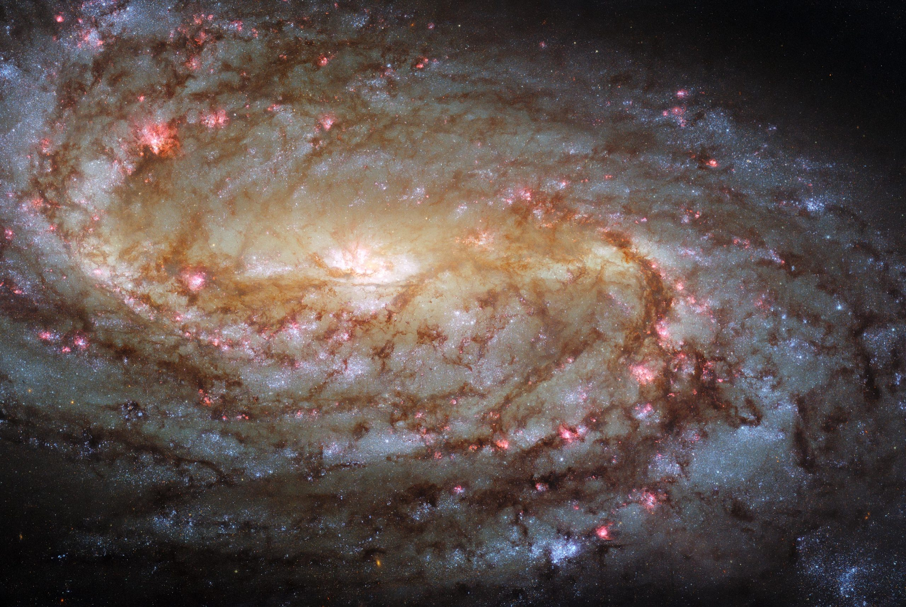

우주왕복선 디스커버리호(STS-82)에 탑승한 7명의 우주인
승무원이 허블의
두 번째 정비 임무를 수행했다.
서비스 임무 2 (SM2)의 목표는 근적외선 카메라와 다중 물체
분광계 (NICMOS)와 우주 망원경 이미징 분광기 (STIS)의 설치를
포함한다.
허블의 성공적인 두 번째 서비스 임무 후에 이루어진 그의 첫
번째 관측은 공개됐다. 관측에는 초신성 1987A 주위의 고리와
초대질량 블랙홀의 분광사진뿐만 아니 알 성운과 오리온 성운의
심장 사진도 포함되었다.